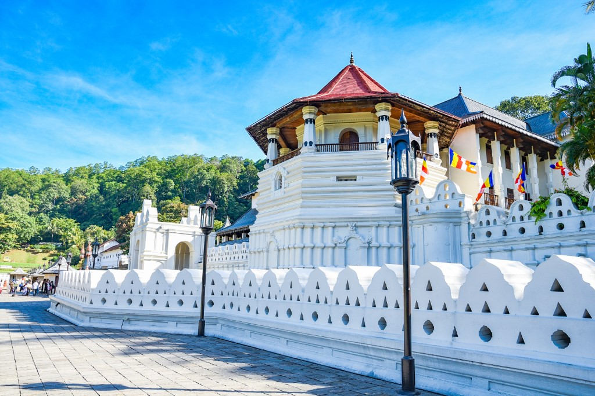

Kandy, Sri Lanka
Kandy, the cultural capital of Sri Lanka, is famous for the Temple of the Tooth Relic and its scenic beauty surrounded by hills.
- Visit the Temple of the Tooth
- Stroll around Kandy Lake
- Explore Peradeniya Botanical Gardens
Singapore

A bustling city-state known for its modern skyline, multicultural food scene, and green urban planning.
- Marina Bay Sands & Gardens by the Bay
- Sentosa Island beaches
- Chinatown & Little India
Tokyo, Japan

Tokyo blends ancient traditions with futuristic vibes, offering endless adventures for any traveler.
- Explore Shinjuku & Shibuya
- Visit Senso-ji Temple
- Try authentic ramen